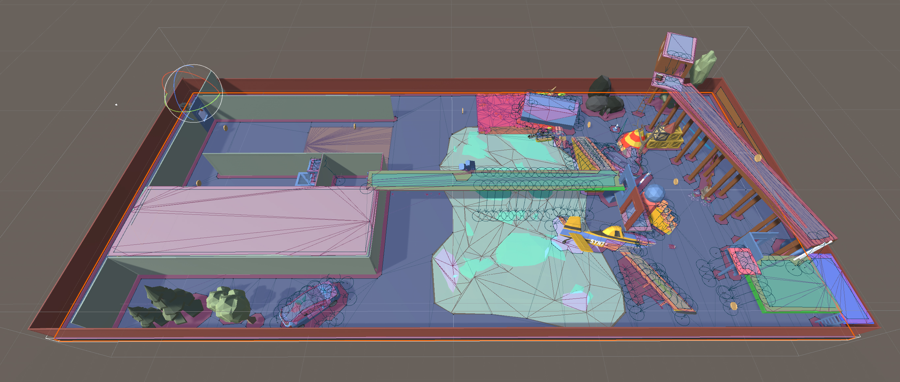

Unity: Pathfinding Research
In depth research and comparison between different pathfinding strategies
Time: Oct 2021
Duration: Two months
Role: Developer
Overview
An experiment was done to compare the different strategies for plotting the shortest route between two points by a computer application. The three pathfinding strategies to find the shortest route was waypoint, A* and NavMesh. The Unity game engine was used to create a virtual environment for this experiment. Agents/NPCs were presented in the environment to visualize the pathfinding strategies.
Tech tools

Learning Points
> Evaluate and analyze the pros and cons of different algorithms
> Development and implementation in a virtual enrivonement using Unity
> Extend standard pathfinding algorithms to handle complex environments not typically encountered in real-world simulations
Experiment Setup
01. NPCs/Agents
Agents are imported from the "POLYGON Starter Pack - Low Poly 3D Art by Synty" in Unity Asset Store. They are placed at the starting line and executes a different variation of pathfinding algorithm to seek for the target position when the game starts
02. Environment
The environment I created is mainly a flat surface with a good amount of obstacles, making it challenging but able to accurately reflect the performance of each algorithms.
03. Performance Metric
The performance metric used to compare & evaluate the different pathfinding algorithms was the number of frames it took for an agent to go from the start position to the target position. Unity engine runs the game at 60 frames per second which allowed me to easily calculate the total number of frames by multiplying the time (in seconds) by 60.
void Update() {
timer += Time.deltaTime;
foreach (GameObject i in agents) {
if (Vector3.Distance(i.transform.position, target.transform.position) < 2) {
print(i.name);
print(timer);
agents.Remove(i);
}
}
}
04. Algorithms
>> Waypoint
At the most basic level of AI pathfinding, my development of the main structure of wayfinding consists of only one script. The script takes in an array of already set waypoints and directs the agents towards the waypoints in the order they were added.
if(Vector3.Distance(this.transform.position, waypoints[currentWP].transform.position) < 1) {
if (tag == 0){
currentWP++;
}
if (tag == 1){
currentWP = currentWP - 1;
}
}
// Change tag to 1 if the NCP reaches the end
if (currentWP >= waypoints.Length) {
tag = 1;
currentWP = currentWP - 1;
}
// Change tag to 0 if the NPC reaches the begining
if (currentWP <= 0) {
tag = 0;
}
>> A*
A* is a best-first search, meaning that it is formulated in terms of weighted graphs. Starting from a specific starting node of a graph, it aims to find a path to the given goal node having the smallest code. My implementation of A* follows the logic by maintaining a tree of paths originating at the start node and extending those paths one edge at a time until its termination criterion is satisfied.
Specifically, A* selects the path that minimizes:
f(n) = g(n) + h(n)Where n is the next node on the path, g(n) is the cost of the path from the start node to n, and h(n) is a heuristic function that estimates the cost of the cheapest path from n to the goal.
while (openSet.Count > 0) {
Node node = openSet[0];
for (int i = 1; i < openSet.Count; i ++) {
if (openSet[i].fCost < node.fCost || openSet[i].fCost == node.fCost) {
if (openSet[i].hCost < node.hCost)
node = openSet[i];
}
}
openSet.Remove(node);
closedSet.Add(node);
if (node == targetNode) {
pathSuccess = true;
break;
}
foreach (Node neighbour in grid.GetNeighbours(node)) {
if (!neighbour.walkable || closedSet.Contains(neighbour)) {
continue;
}
int newCostToNeighbour = node.gCost + GetDistance(node, neighbour);
if (newCostToNeighbour < neighbour.gCost || !openSet.Contains(neighbour)) {
neighbour.gCost = newCostToNeighbour;
neighbour.hCost = GetDistance(neighbour, targetNode);
neighbour.parent = node;
if (!openSet.Contains(neighbour))
openSet.Add(neighbour);
}
}
}
>> NavMesh
My implementation of the NavMesh pathfinding utilizes a combination of Unity features and a simple script for the settings. The environment is baked with Unity and certain terrains are added with different costs to affect the pathing and movement speed of the agents, different terrain includes: mud, sand, ice, walls, and ceilings. The environment is also baked according to the agents' property (ex. Agent that has higher mass and can only go on ramps that are less steep compared to a lighter mass agent), creating a unique environment and pathing for different agents.
My setting script contains adjustment to the agents pathfinding ability within the NavMesh system.
void Update() {
NavMeshHit navHit;
if (NavMesh.SamplePosition(transform.position, out navHit, 1f, NavMesh.AllAreas))
{
int mask1 = navHit.mask;
int index = 0;
while ((mask1 >>= 1) > 0)
{
index++;
}
float areaCost = NavMesh.GetAreaCost(index);
int wallMask = 1 << NavMesh.GetAreaFromName("Wall");
int ceilingMask = 1 << NavMesh.GetAreaFromName("Ceiling");
agent.speed = basespeed - areaCost - rb.mass;
}
agent.SetDestination(target.transform.position);
}